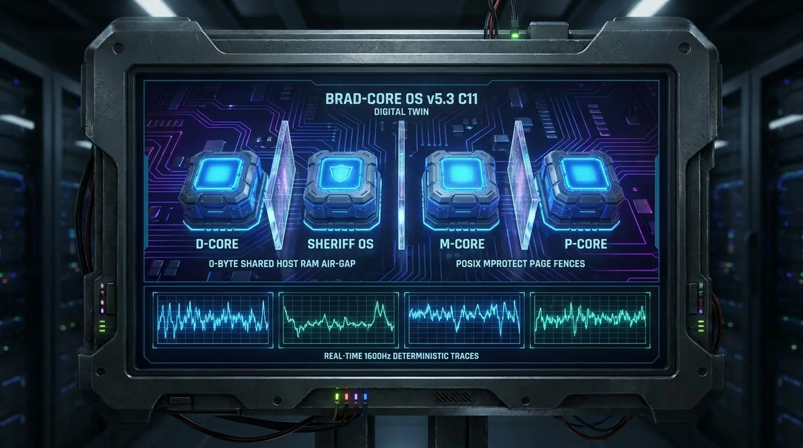

Testbeds & Evidence
Try the software testbeds and see what still needs to be proven on hardware.
Testbeds & Evidence
Try the software testbeds and see what still needs to be proven on hardware.
Examine the evidence.
Explore what the software does when given normal commands, bad commands, and simulated faults. We also show the hardware tests planned for Phase 1.
Interactive architecture and system-behavior evaluation
Software execution and deterministic safety-logic evaluation
Interactive fault-injection and scenario-based testing
Technical baselines and supporting verification records
Candidate physical implementation and HIL verification objectives
The software tests show how the code behaves in those test scenarios. They do not prove that real equipment will stop safely. Phase 1 will measure the physical response.
Help put the hardware to the test.
The $200,000 Phase 1 target covers physical testing ($150,000) and operating continuity ($50,000).
CONNECT WITH BRAD-CORE